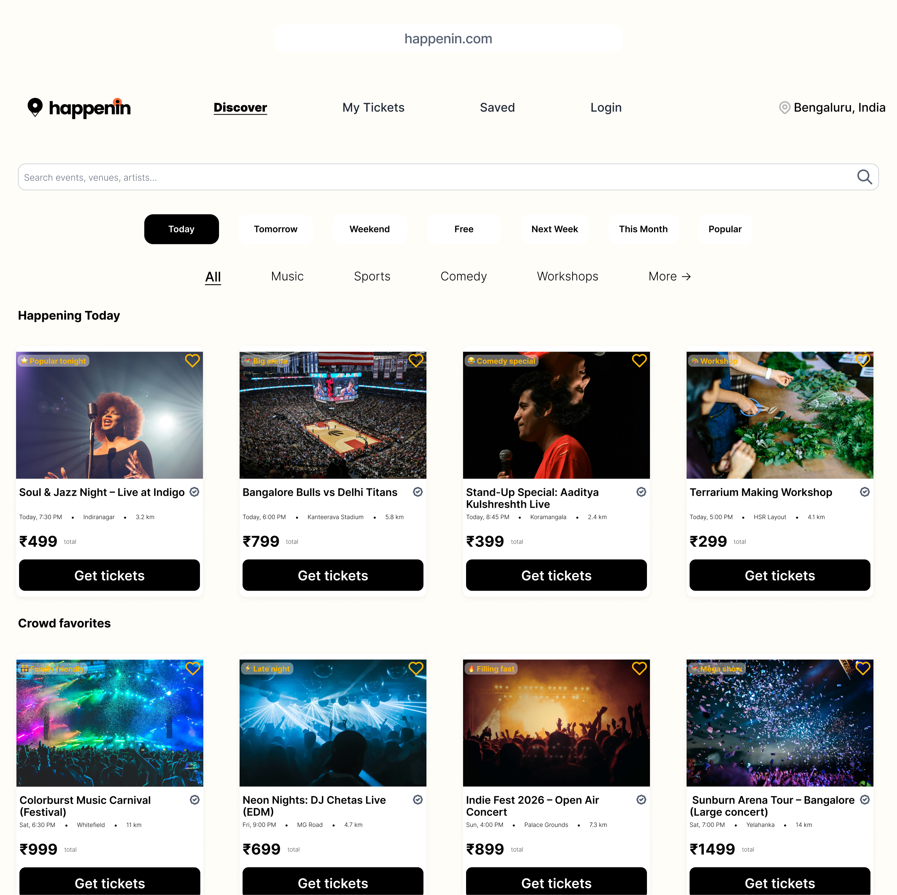
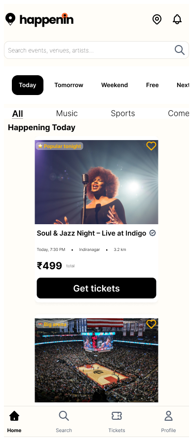

01 — Featured Project
Happenin — Event Discovery & Booking Platform
India's event booking apps hide fees, overwhelm users with 8+ step flows, and fail at the exact moment that matters — the venue entrance when WiFi drops. I redesigned the entire experience from the ground up.

The Problem
India's ticketing apps fail users at every step
BookMyShow and Paytm Insider have millions of users, but they've never fixed their core UX problems. The issues aren't technical — they're design failures that create anxiety, frustration, and abandoned bookings.
01
Hidden fees at checkout
Users select tickets at ₹499 and discover they owe ₹612 at the final step. The surprise triggers abandonment and erodes trust.
02
Complex booking flows
8+ screens to complete a booking. Unnecessary account creation, redundant form fields, and unclear progress indicators cause drop-off.
03
Offline ticket failures
Venue WiFi is unreliable. Users standing at crowded entrances can't load their tickets. No app addresses this critical real-world moment.
04
Poor event discovery
Category browsing is overwhelming. No personalisation, no location context, no quick filters for the most common queries: "what's on tonight near me?"
Design Approach
Transparency and simplicity as core principles
Rather than adding features to compete, I stripped the experience back to what users actually need: find an event, book it confidently, show the ticket at the door. Every design decision was tested against these three moments.
Show me the real price on the first screen. If you hide it, I don't trust anything else on your platform.
— Core design principle for Happenin
Key Solutions
Four specific problems, four specific solutions
Solution 01
Transparent pricing from first tap
Service fees shown on event cards AND ticket selection AND payment. ₹499 total means ₹499 total — confirmed at every step.
Solution 02
3-step booking flow
Select → Pay → Confirmed. Clear progress indicator, persistent order summary, single CTA per screen. Reduces cognitive load at each step.
Solution 03
Offline-capable QR tickets
"✓ Works offline — this ticket is cached and ready to use" displayed prominently. Large QR code optimised for scanning in dark venues. Brightness reminder included.
Solution 04
Location-first discovery
Quick filters (Today / Tomorrow / Weekend / Free) above category browsing. Non-intrusive location request — users can browse all events even if they decline.
Mobile Design
Mobile-first, then desktop
Events are discovered and booked on phones. I designed every critical flow for mobile first — thumb-reachable bottom navigation, horizontal scrolling filter chips, large touch targets — then adapted to desktop.

Mobile discovery screen — bottom navigation, filter chips, location-based event cards with transparent pricing
Design System
A system built for trust and warmth
Colour palette: Primary black for actions and headings, cream background for warmth without screen fatigue, orange used sparingly for urgency and CTAs only. The restraint is intentional — orange means "act now."
Signature element: Dashed orange border on all ticket-related cards. Creates a recognisable pattern that helps users identify booking-relevant content instantly across different screens.
Typography: Playfair Display for headings (warmth and personality), DM Sans for body (clarity and readability), DM Mono for prices and metadata (precision and trustworthiness).
Spacing: 8px base grid — tight (8px), default (16px), medium (24px), large (32px), section (48px). Consistent spatial rhythm across all 20 screens.
What I Learned
Three things this project taught me
01
Component reusability is a design decision
The dashed ticket card appears in event detail (static), ticket selection (interactive), and confirmation (summary). Designing one component that works in three contexts — rather than three separate components — reduced inconsistency and sped up iteration.
02
Design for the worst moment, not the best
The QR ticket screen forced me to think about anxious users at crowded venue entrances with dying phone batteries. That real-world constraint — not aesthetic preference — drove the large QR size, brightness reminder, and offline caching indicator.
03
Transparency builds trust even when it costs conversions
Showing service fees upfront might deter some bookings. But hidden fees create frustration that destroys long-term trust. The right design decision isn't always the one that maximises short-term conversion.